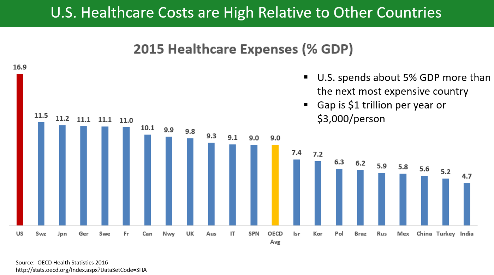

Synopsis
The World Health Organization ranked U.S. health system #37 in terms of efficiency, access to care, equity, and healthy lives. Despite having the world’s most expensive healthcare and often boasting “the best healthcare in the world”, the U.S. has much to learn from other industrialized nations, especially the top-ranked France. The talk focused on differences in attitudes towards universal healthcare coverage and structural differences between the U.S. health system and those of higher-ranked nations.
Functionalist Perspective
America’s health system of “the world’s best care” only for those who can afford it is deeply entrenched in its capitalistic society. The private for-profit insurance companies that largely mediate access to healthcare coverage in America demand costly payments that result from and support other capitalistic practices. Prices are high partly because many service workers and specialists are employed to provide a fragmented healthcare service. An individual pays for insurance company workers, nurses that aid a doctor, the doctor, and other referred physicians as well as their nurses. Since doctors often defensively order diagnostic procedures—even when they are not necessary—in order to avoid potential lawsuits, patients bear the cost of clinical lab workers’ labor. Patients also pay for the use of high-tech equipment and expensive lab materials in diagnostic tests. This creates a demand for those goods and, consequently, for workers who produce and maintain them. Finally, patients pay for many drugs that are overprescribed by doctors due to the lucrative and aggressive marketing strategies of pharmaceutical companies. Thus, America’s expensive healthcare is a functional part of its capitalistic system because it encourages growth and profit accumulation in the US healthcare industry.

However, these same practices also contribute to social instability and dysfunction. The uninsured in America (i.e. mainly the working class and low-income individuals) avoid doctor’s visits because of the immense out-of-pocket cost. As a result, many chronic health problems like obesity, heart disease, and type 2 diabetes develop and worsen when they could have been prevented by medical care. This puts financial strain on the uninsured because they inevitably have to pay for expensive, long-term treatments—instead of cheaper preventative therapies—when their health declines to the point that medical attention is unavoidable. Thus, a population that already cannot afford health coverage is forced to become poorer, increasing the wealth gap in America directly and indirectly as the uninsured have to divert their limited monetary resources and energies away from social and economic development. Additionally, the prevalence of these chronic illnesses places a demand on the health system to focus on treating preventable health problems instead of other widespread, non-preventable medical issues. Costly health care hurts American society as a whole because it creates a deficit of healthy and better developed human resources.